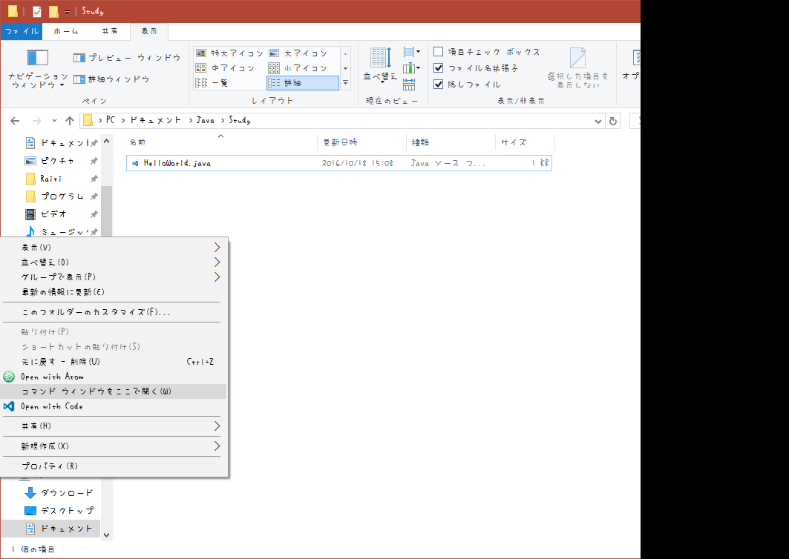
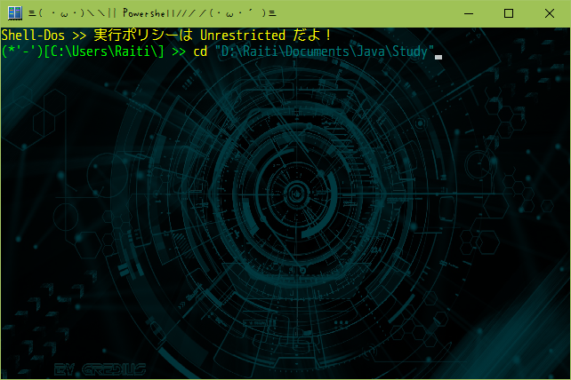
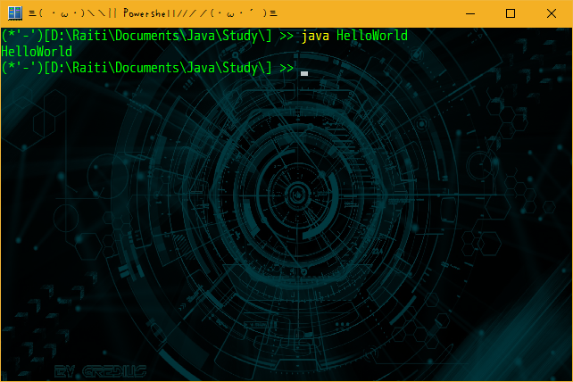

はい。ということで第二章に入ります。
※この解説はWindows10を使っていきます。違う方は、同じような操作をしてください。
今回はさっそく、プログラムを書いていきたいと思います。え？「まだ何もわからないのに早くない？」って？
プログラムは実際に書いてみないと覚えられません！！
細かい説明はその都度説明していきますので。
というか、この解説はちゃんとステップアップ方式で進めていきますので安心してください。
じゃ、さっそくIDEAを起動....
しませんよ？
なんでって？
まずコマンドによるコンパイルとかの仕方から覚えてほしいからです。
じゃ、まず、どこにでもいいので、ディレクトリを作ってください。
前回JavaDocを"MyDocument\Java"に入れたと思います。
というかマイドキュメントの中にJavaというフォルダーを作ってください。
そのJavaの中にStudyというフォルダを作ってください。
そのStudyってフォルダをこの解説ではRootディレクトリとします。
つまり、そのStudyってフォルダーの中しかこの解説では使いません。(たぶん)
では、Studyの中に1章というフォルダを作りましょう。
そこが、この章で使うフォルダです。
ではまず、拡張子が表示されるか確認しましょう。
エクスプローラーの上の表示ってタブを押して、右の方にあるファイル拡張子というとこのチェックボックスがONになっていることを確認してください。
なっていなければONにしてください。
そしたら、準備は完了です。では本編へ！！
第1章 1部 基本の'き' HelloWorld
ということで、プログラムを始めるとき、誰もが1回は作る、"HelloWorld"のプログラムを作りましょう。
どんなプログラムかって？それは作ってからのお楽しみ
では、さっきの1章のフォルダの中に新規テキストドキュメントを作成しましょう。
右クリック→新規作成→テキストドキュメント です。
そしたら、名前を HelloWorld.java としましょう。
拡張子も変えてください。
警告が出ても無視してOK！！
そしたらメモ帳を開いてさっきのファイルをメモ帳の上にドラッグ&ドロップしましょう。
そしたら次のコードを入力してください。
public class HelloWorld{
public static void main(String[] args){
System.out.println("HelloWorld");
}
}
これです。あ、いうの忘れてました。
らいちたその解説の中でコピペはタブーです！
なんでかって？
書かないと覚えられないからです！！
だから、見ながら移すようにしましょう！！
で、完成したら、上書き保存！
そしたらそのjavaファイルがあるフォルダーを開いたエクスプローラーの上でシフト右クリック。※ファイルを選択していない状態で
そうすると出て来る、コマンドウィンドウをここで開くってやつ

ってやつを押しましょう。
(本当はStudy直下じゃなくてその先の"1章"ってフォルダに入ってるはず
もしないよって人は、コマンドプロンプトを普通に起動し cd " フォルダまでのフルパス "と入力し、エンター

僕の場合こうだね。(本当はStudy直下じゃなくてその先の"1章"ってフォルダに(2回目)
そしたら試しに dir って入力してエンター。出てくる文字の中にさっきのファイル名があったら成功だよ。
そしたら
javac HelloWorld.java
と入力して、エンターを押してみよう！！何も表示されなかったら成功！！
・よくあるエラー
HelloWorld.java:4: エラー: ';'がありません
System.out.println("HelloWorld")
^
エラー1個
HelloWorld.java:4: エラー: シンボルを見つけられません System.out.println(HelloWorld); ^ シンボル: 変数 HelloWorld 場所: クラス HelloWorld エラー1個
まぁ、わかりやすいですよね
;が抜けてたり、下の場合は""←これが抜けています。
まあ、そこを直して、もう一度試してください。
で、コンパイルは完了です。
じゃ、実行してみましょう！
実行方法は、
java HelloWorld
です

こんなかんじでHelloWorldと表示されました！！
では、今度は自分の好きな文字を表示してみましょう！
public class HelloWorld{
public static void main (String [] args){
System.out.println("らいちたそだよ～！");
}
}
書き換えたところわかりますか？らいちたそだよ～！ってところですね。ここを自分の好きな文字に書き換えてみましょう。
そしてコンパイルして実行！
正しく表示されましたね。
それだけかって？
それだけです。
まあ、いいじゃないですか。あなたの書いたプログラムが動いたんですよ！！
え？意味を知りたい？
えーと
public class HelloWorld{
/*...*/
}
ってところでクラスを定義しています。
そして
public static void main(String[] args){
/*...*/
}
ってところで、メインメソッドを定義しています。
そして画面に出力してるのは、
System.out.println("HelloWorld");
です。
これはSystemというクラスオブジェクトの中のoutというインスタンスのprintlnってメソッドに、
引数new String("HelloWorld")を渡して、メソッドを実行してるんだよ。
さっぱりだよね。
まあ、その辺も、この解説を見ていけばわかるから安心して！！
ってことで第一部はここまで！！
またね！！
Java解説トップ